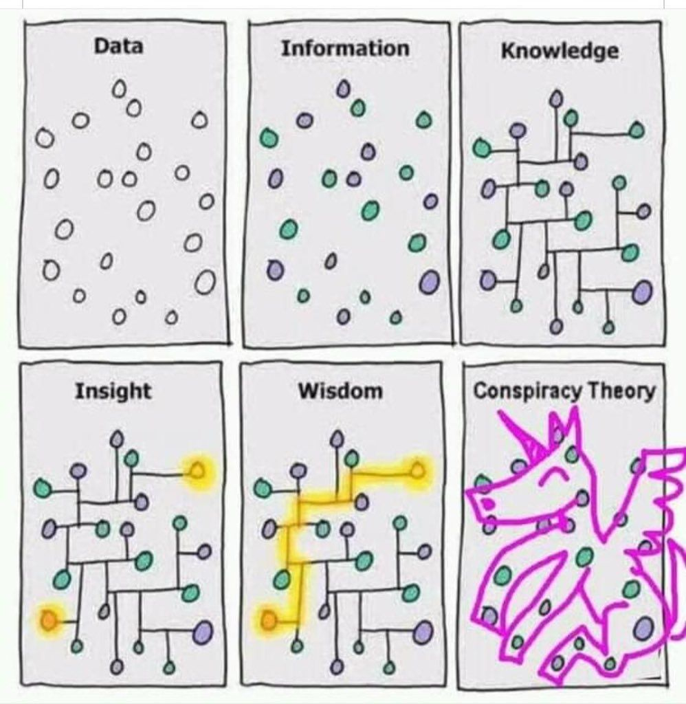

Inference to the Best Explanation
Home
Inductive Arguments

Problem Sets:
Evaluating Inferences to the Best Explanation
Inferences to the Best Explanation in Standard Form
Extra Evaluation Practice
Inference to the Best Explanation Case Study: Evolutionary Psychology
Inference to the Best Explanation Case Study: Conspiracy Theories